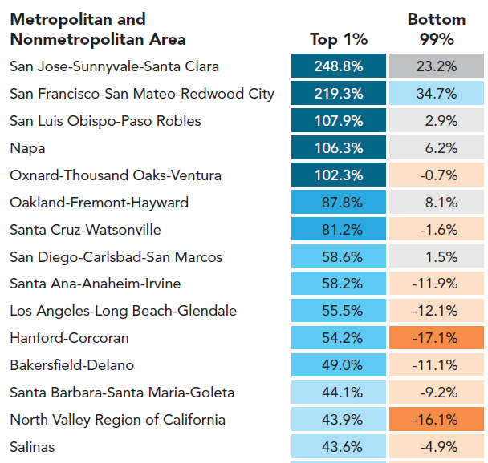
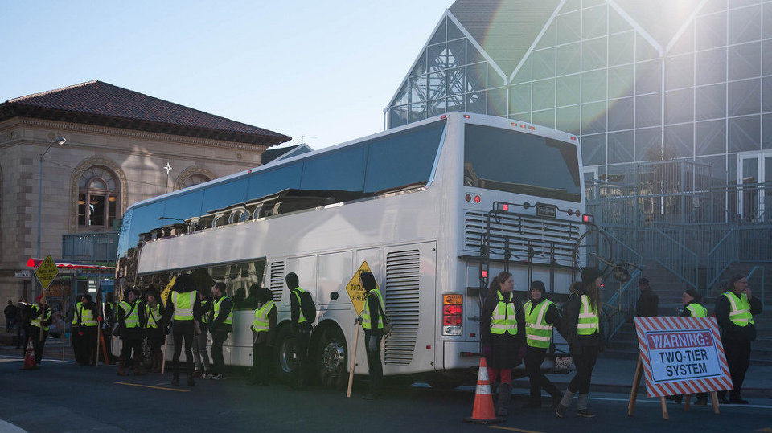
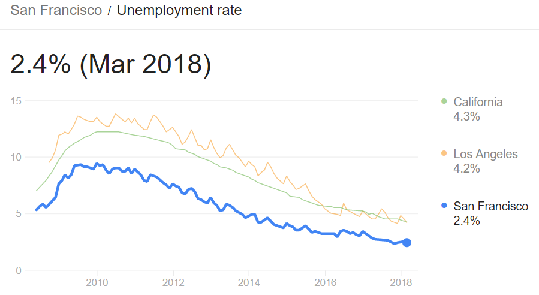
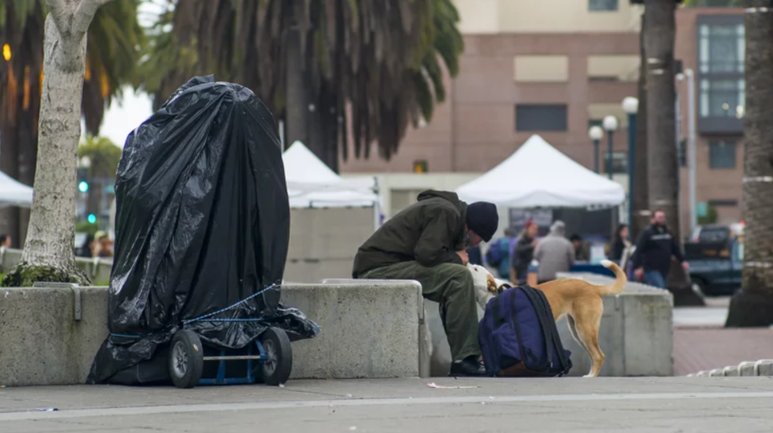
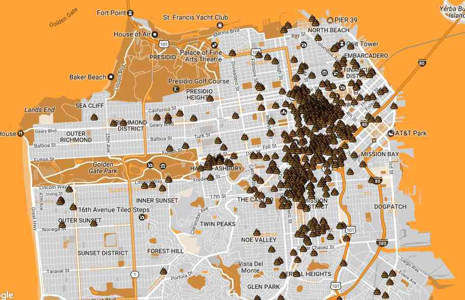
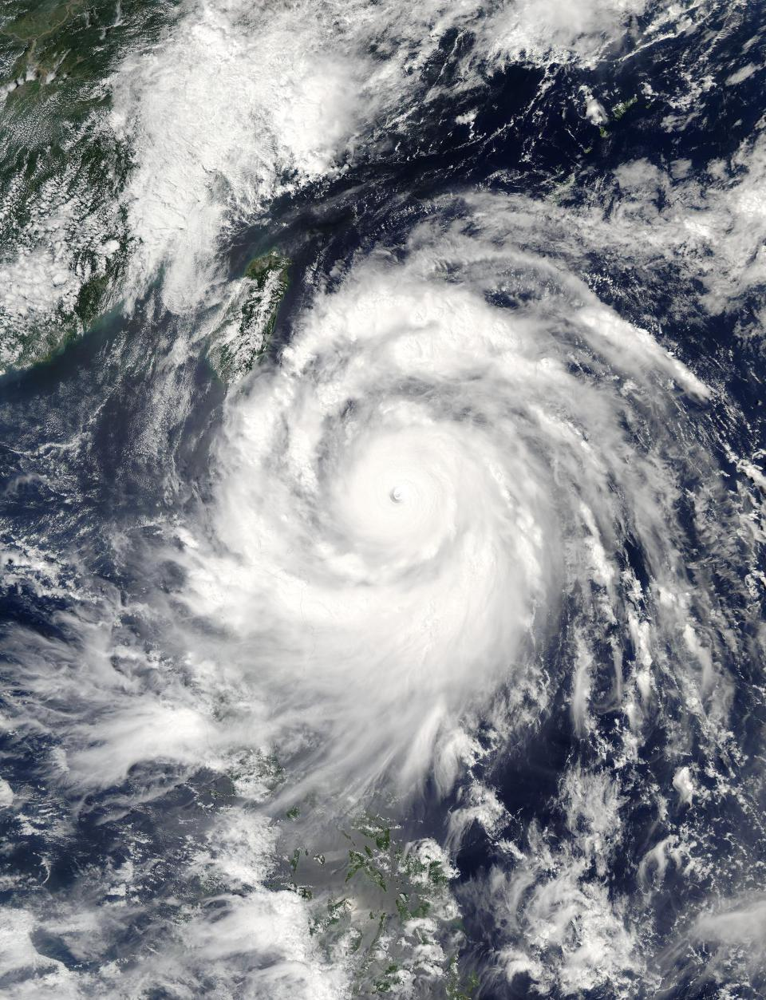
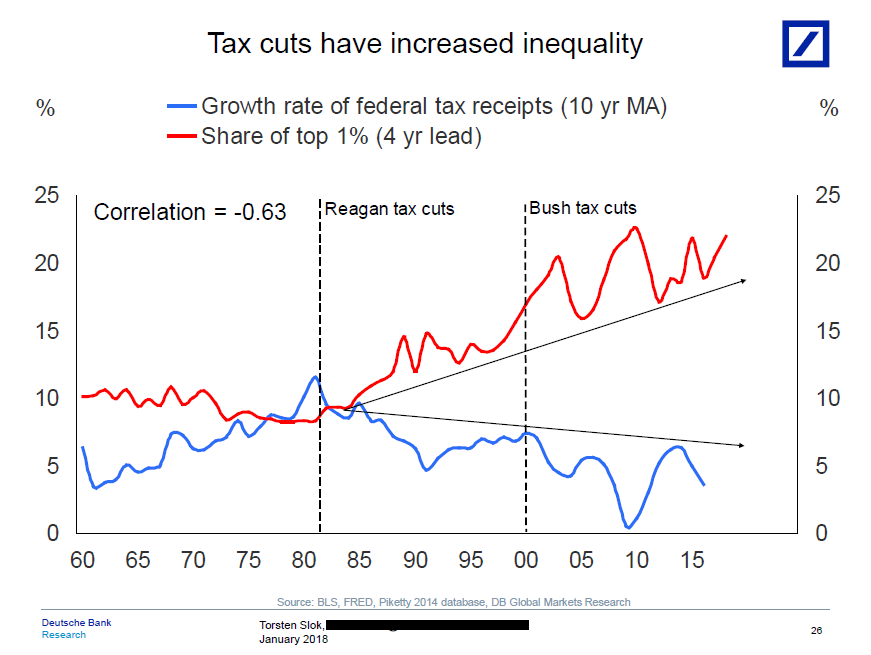

인공지능 박사들이 G사에 취직하지 않은 이유 - 샌프란시스코의 비극
게시: 2018-07-05T06:30:00+09:00
2016년 자료이긴 하지만, 캘리포니아 예산 센터(California Budget Center)의 연구 결과에 따르면 캘리포니아 내에서 가장 경제적 불평등이 심한 곳은 샌프란시스코입니다. 도시의 상위 1%의 평균 소득은 360만 달러인데 나머지 99%의 평균 소득(81,094 달러)의 44배나 됩니다. 1989년에는 상위 1%의 소득이 전체 소득의 15.8%였으나, 2016년에는 무려 30.8%가 되었습니다.
경제적 불평등이 심화되는 것이 꼭 더 나쁜 것은 아닙니다. 부자가 되고 싶다는 욕망이 인류를 발전시켰으니까요. 다들 못 먹고 못 입는 환경에서는 모두 평등합니다. 그러다 부자 한 명이 기업을 세워 억만장자가 되면 당연히 불평등이 심화되는 것이지만, 그 부자의 기업 덕분에 나머지 99%가 배불리 먹게 된다면 그건 발전이지 퇴보가 아닙니다.
실제로 샌프란시스코가 구글 등 테크 기업들 덕분에 전례없이 부유한 도시가 되면서, 상위 1%의 소득 성장률이 24년간 248%에 이르는 동안, 나머지 99%의 소득도 늘긴 늘었습니다. 비록 23%에 그치긴 했지만요. 그래서 샌프란시스코는 살기 좋은 동네가 되었을까요 ?

(1989~2013년 사이 상위 1%와 99%의 평균 소득 증가율입니다. 인플레가 반영된 수치입니다.)
몇 년 전에 저는 텍사스 오스틴에 있는 본사 연구소에 출장을 간 적이 있었습니다. 거기서 금요일 저녁에 Deep Learning, 즉 소위 말하는 인공지능 분야 연구원들 6~7명과 간단히 맥주를 마시면서 잡담하는 자리에 낀 적이 있었습니다. 인도계가 많았고 독일계, 일본계 등이 있었는데, 걔들도 그런 자리에서 서로 정보 교환도 하고 그러더라고요. 그 중 한 명은 비교적 최근에 박사 과정을 마치고 저희 회사 연구소에 취직을 한 친구였는데, 자기 취업 이야기를 하면서 "샌프란시스코에 있는 I사 연구소와 이 곳 두 군데에 자리를 얻었어. 그래서 여기를 택했지" 라고 말을 하더라고요. 저는 속으로 흠칫 놀라서 실례를 무릅쓰고 물었지요. "야, 왜 거기를 택하지 않고 여기로 왔니 ?" 제가 알기로는 거기가 월급도 훨씬 많고 또 샌프란시스코에 비하면 오스틴은 (텍사스에서 제일 괜찮은 도시라고는 하지만) 촌동네나 다름 없었거든요.
제가 그 질문을 하자 일순간 좌중의 표정이... 아주 어이없다는 듯 변하더군요. "일단 돈이지. 여기가 더 많이 주쟎아." 그러니까 우리 회사도 본사 연구원들은 월급이 아주 많았던 것이었나봐요. 월급이 짠 것은 그냥 제 월급이 짠 것이고요. 그리고 또 샌프란시스코에는 절대 가지 않겠다는 소리들이 여기저기서 튀어 나왔습니다. 가령 독일에서 대학을 마치고 미국에서 박사 학위를 받은 독일 양반은 예전에 G사에 자리를 제안받기는 했으나, 거기로 가면 샌프란시스코에서 살아야 하는데 그건 미친 짓이므로 가지 않았다는 거에요. 그 친구들의 이구동성에 따르면, 샌프란시스코에서는 아무리 월급이 많아도 집세와 아이들 교육비가 너무 많이 들어서 생활 수준이 여기보다 확 떨어진다는 거지요.
테크 기업들이 샌프란시스코에 몰려들면서 부동산 가격과 집세가 오르고, 그로 인해 기존 주민들이 자꾸 밀려나는 일이 벌어지고 있다는 뉴스는 많이 들으셨을 것입니다. 심지어는 G사 등 여러 기업들이 운영하는 출퇴근 버스가 불평등의 상징으로서 주민들의 원성을 자아내고 있다는 뉴스도 있었습니다. 그 주민들은 그런 테크 기업들에게 '샌프란시스코를 떠나라'라며 시위를 하기도 했다지요.
왜 이런 일이 벌어졌을까요 ? 그런 테크 기업들 덕분에 월급을 많이 받는 직원들이 샌프란시스코에 살게 되었고, 그들의 소비 덕분에 다른 주민들도 잘 살게 되었는데 말이지요. 샌프란시스코의 실업률도 최저를 기록하고 있는데 대체 뭐가 불만일까요 ?

(G사의 셔틀버스에 대해 '샌프란시스코를 떠나라'고 시위대가 항의를 하는 바람에 경찰이 보호하고 있는 모습입니다.)

(샌프란시스코의 실업률은 특히 낮고 점점 낮아지고 있습니다. 식당 웨이터도 못 구해서 난리라는군요. 우리 보수 언론들은 항상 '최저임금이 오르면 식당 이모들이 피해를 본다'라고 즐겨쓰는데, 저렇게 식당 웨이터도 인력난이 심하다니 샌프란시스코의 식당 웨이터들은 행복할까요 ? 꼭 그렇지는 않다고 합니다.)
가장 큰 이유는 역시 부동산 가격 상승과 그에 따른 집세 상승입니다. G사든 A사든 F사든, 그런 회사의 주식 가격이 폭등해서 억만장자들이 늘어나는 것은 일반 서민들의 삶에 큰 영향을 끼치지는 않습니다. 그러나 부동산의 경우는 이야기가 다릅니다. 모든 사람은 살아가기 위해서는 공간 사용료를 내야 합니다. 보수 진영에서는 흔히 전체 시민들 중 하위 50%는 세금도 안 내는 기생충 같은 존재라고 욕을 하기도 합니다만, 그런 저소득층조차도 집세는 꾸준히 내야 합니다. 소득 대비 금액으로 보면 오히려 부자들의 세금보다 훨씬 더 많은 지출을 하는 셈이지요. 그런데 집세가 소득에 비해 훨씬 더 가파르게 상승한다면 당장 생존이 위협받게 됩니다.
G사나 A사, F사 등은 분명히 전에 없던 가치를 새로 창조해내어 인류의 부를 늘리는 기업들입니다. 그러나 (건물과는 별도로) 땅은 그냥 거기에 존재할 뿐, 전에 없던 가치를 새로 만들지는 못합니다. 물이나 공기처럼요. 만약 물이나 공기도 거래와 투기의 대상이 된다면, 그래서 그 가격이 요즘 강남 아파트 가격처럼 솟구친다면, 그래서 서민들이 물 한 모금과 공기 한 모금을 아껴 마셔야 하는 상황이 된다면 이 세상이 얼마나 지옥 같은 곳이 되겠습니까 ? 물론 그럴 수록 그렇게 물과 공기를 사들인 자본가들은 더욱 큰 돈을 벌게 되겠지요. 기술 혁신과 가치 창조가 아니라 그냥 돈이 많았다는 사실 덕분에요.
샌프란시스코의 주요 산업 중 하나는 관광업입니다. 'If you're going to San Francisco Be sure to wear some flowers in your hair' 라는 스캇 맥켄지의 노래 때문이 아니더라도 샌프란시스코는 낭만이 넘치는 매우 아름다운 도시라서 관광객이 계속 늘어나고 있었습니다. 그에 못지 않게, 많은 테크 기업들로 인해 그 도시에서 열리는 컨퍼런스 등이 많아서 그에 따른 방문객들이 호텔과 식당 등에 쓰는 돈도 많았습니다. 그러나 최근 샌프란시스코는 거지와 노숙자가 넘쳐나고, 길거리마다 그런 사람들이 배설해놓은 대소변으로 악취가 풍기는 도시가 되어 가고 있습니다. 집세가 너무 가파르게 상승하여 집세를 못 내고, 그로 인해 길거리로 나 앉은 사람들이 그처럼 많아진 것이지요. 하긴 비교적 고액 연봉을 받는 개발자들도 집세를 감당하지 못해 회사 주차장에 캠핑카를 세워두고 숙식을 해결한다는 뉴스가 나온 마당에, 놀라운 일은 아닙니다. 그 때문에 최근 포브스지에는 원래 샌프란시스코에서 열리기로 오래 전부터 예정되어 있던 의사 협회의 컨퍼런스가 취소되고 다른 도시로 변경되었다고 합니다.

(샌프란시스코의 흔한 노숙자의 모습입니다.)

(샌프란시스코 어느 거리에 가장 대소변이 많이 널려있는지 알려주는 지도가 나올 정도의 상황이라고 합니다.)
혹자는 샌프란시스코의 그런 퇴행은 샌프란시스코의 경제적 불평등이나 부동산 가격 상승과는 전혀 무관하며, 오히려 도시 행정부의 너무 사회주의적으로 관대한 법 집행 때문이라고 주장합니다. 샌프란시스코에 거지나 노숙자, 가난뱅이는 필요없으며, 더 이상 월세를 낼 형편이 안 된다면 도시 외곽으로 나가 살면 되는데 그걸 거부하고 도심지에서 노숙자가 되는 것은 몰지각하고 염치없는 짓이라는 것이지요. 여러분들 생각은 어떠신지 모르겠습니다.
최근에 태풍이 지나갔지요. 다들 아시다시피 태풍이 생기는 것은 열역학과 상관있습니다. 지구는 둥글기 때문에 적도 부근에는 극지방보다 더 많은 태양 에너지가 내리 쬡니다. 그 에너지가 바람과 조류를 타고 극지방까지 (MB가 주장한 낙수효과처럼) 순조롭고 얌전히 흘러간다면 큰 문제가 없을 것입니다. 그러나 세상은 그렇게 완벽하지 않기 때문에 결국 적도 지방과 극지방 사이에는 부분적인 에너지 불균형이 쌓이게 됩니다. 그리고 열역학 법칙상 그런 과다한 에너지 불균형은 결국 해소되어야 하므로, 태풍이라는 것이 발생하여 적도 지방의 열 에너지를 극 지방 쪽으로 날려 보내는 것입니다. 그 과정에서 많은 파괴가 발생합니다.

(태풍도 결국 에너지의 평형을 찾기 위한 위대한 자연의 장치 중 하나입니다. 열역학 제2 법칙을 운운하며 절대 신의 개입 없이는 생명이 탄생할 수 없다고 주장하시는 분들이 계시던데, 그런 분들께서는 아무 것도 없던 평온한 바다에 왜 저런 태풍이 생겨났다가 사라지는지를 설명하시면 될 것 같습니다.)
인간 세상도 마찬가지입니다. 어떤 사람들은 남다른 재주가 있어 인류에 많은 공헌을 하고 큰 재산을 모읍니다. 그건 좋은 일입니다. 그러나 돈이 돈을 벌어들이는 자본주의 세계에서 생산에 의한 소득보다 토지 등을 이용한 지대 추구 이득이 더 빨리 성장한다면, 특히 상속세가 없거나 충분치 않아서 그런 불균형이 세대를 거쳐 쌓이게 되면, 결국 그런 불균형은 태풍, 즉 혁명이나 폭동, 전쟁으로 파괴적인 평형을 이루게 됩니다. 인류는 그런 과정을 이미 여러번 반복해서 보았습니다.
최근에 정부가 종합금융소득세와 종합부동산세 등 부자 증세안을 발표했지요. 모든 사람들은 세금을 싫어합니다. 저도 싫습니다. 그러나 그런 증세가 태풍을 막는 보험 같은 것이라고 생각하시면 나쁘지 않을 것 같습니다. 분명히 혁명보다는 세금이 모든 사람들에게 훨씬 더 평화롭거든요.

(감세는 분명히 경제적 불평등을 심화시킵니다. 1960~2015년 사이의 미국 세수 증가율과 상위 1%가 차지하는 퍼센티지의 관계입니다.)
저도 그냥 들은 이야기에 불과합니다만, 힌두교에서는 거지에게 적선을 하는 것을 무척 권장한다고 합니다. 좋은 업보를 쌓는다는 것이지요. 그래서 거지들도 구걸을 하면서도 무척 당당하다고 합니다. 적선을 받는 대신 좋은 업보를 쌓게 해주니까 공정한 거래라는 것이지요. 그러나 진정 좋은 업보는 아예 거지가 생기지 않는, 어쩔 수 없이 생기더라도 최소화할 수 있는 그런 사회를 만드는 것이 아닐까 합니다.
Source :
http://fortune.com/2018/07/02/san-francisco-streets-streets-medical-convention/
https://legalinsurrection.com/2016/12/people-in-san-francisco-need-a-poop-map-to-avoid-crap-on-the-street/#comments
https://www.npr.org/sections/alltechconsidered/2013/12/17/251960183/in-a-divided-san-francisco-private-tech-buses-drive-tension
https://ftalphaville.ft.com/2018/01/04/2197227/eight-charts-on-inequality-in-the-us/
https://qz.com/711854/the-inequality-happening-now-in-san-francisco-will-impact-america-for-generations-to-come/
https://calbudgetcenter.org/wp-content/uploads/The-Growth-of-Top-Incomes-Across-California-02172016.pdf
https://fred.stlouisfed.org/series/CASANF0URN